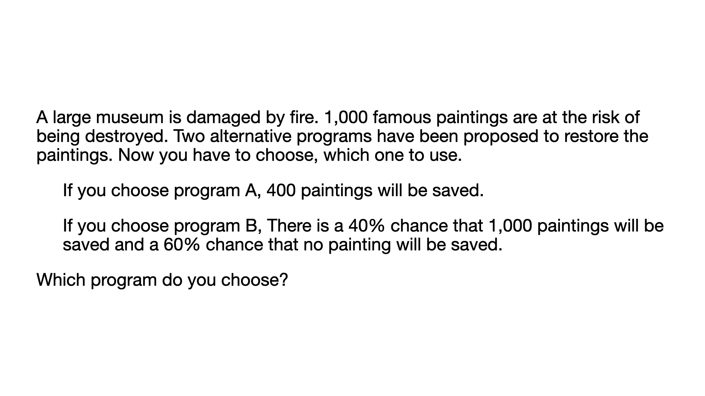
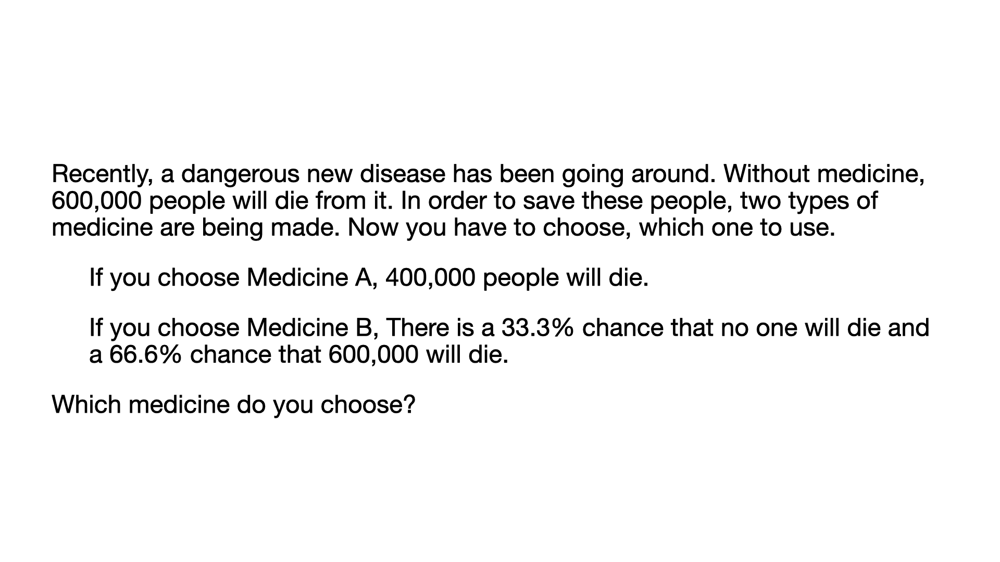
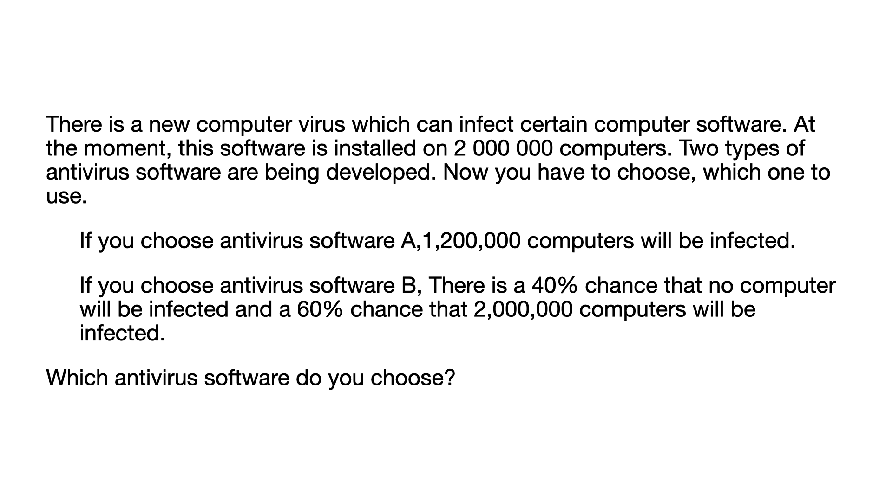

<!DOCTYPE html>
<html>
    <head>
        <title>Main Experiment</title>
        <script src="https://unpkg.com/jspsych@7.3.4"></script>
        <script src="https://unpkg.com/@jspsych/plugin-survey-likert@1.1.3"></script>
        <script src="https://unpkg.com/@jspsych/plugin-survey-multi-choice@2.0.0"></script>
        <script src="https://unpkg.com/@jspsych/plugin-instructions@1.1.4"></script>
        <script src="https://unpkg.com/@jspsych/plugin-html-keyboard-response@1.1.3"></script>
        <script src="https://unpkg.com/@jspsych/plugin-html-button-response@1.2.0"></script>
        <script src="https://unpkg.com/@jspsych/plugin-image-button-response@2.0.0"></script>
        <script src="https://unpkg.com/@jspsych/plugin-survey-html-form@1.0.3"></script>
        <link href="https://unpkg.com/jspsych@7.3.4/css/jspsych.css" rel="stylesheet" type="text/css" />
    </head>
    <body></body>
    <script>
        // Initialize jsPsych
        const jsPsych = initJsPsych({
            on_finish: function() {
                jsPsych.data.displayData();
            }
        });
        var timeline = [];

        /**  Preload task images  */
        const styleSetup = "style='width:1000px; height:auto; display:block; margin-left:auto; margin-right:auto;'";
        const all_stimuli = [
            {frame: "loss", type: "practice", question: ``,},
            {frame: "gain", type: "practice", question: ``,},
            {frame: "gain", type: "formal", question: ``,},
            {frame: "gain", type: "formal", question: ``,},
            {frame: "gain", type: "formal", question: ``,},
            {frame: "loss", type: "formal", question: ``,},
            {frame: "loss", type: "formal", question: ``,},
            {frame: "loss", type: "formal", question: ``,},
        ];

        /* ----------------------------------------------------------
        /* Welcome */
        /* Consent */
        /* Instruction */
        /* ----------------------------------------------------------

        /**  Setup Task  */
        // Coin flip to select gain or loss frames
        var selected_frame = Math.random() > 0.5 ? "loss" : "gain";

        // Fixation 
        var fixation = {
            type: jsPsychHtmlKeyboardResponse,
            stimulus: '<div style="font-size:50px;">+</div>',
            choices: "NO_KEYS",
            trial_duration: 1000,
            };
        
        // Test
        var test = {
            type: jsPsychSurveyMultiChoice,
            questions: [
                {
                prompt: jsPsych.timelineVariable('question'),  // Use the question from timeline variables
                options: ['A', 'B', 'C: Flip coin'], 
                required: true,
                horizontal: true
                }, 
            ],
        };

        // Evaluation
        var evaluate_confidence = {
            type: jsPsychSurveyLikert,
            questions: [
                {
                prompt: "How confident are you in the choice you just made?", 
                labels: [
                    "1<br>extremely not confident", 
                    "2", 
                    "3", 
                    "4", 
                    "5<br>extremely confident",
                ]
                }
            ]
            };

        /** ---------------------  Practice ------------------------------ */
        // Practice Stimuli
        const practice_stimuli = all_stimuli.filter(stimulus => stimulus.frame === selected_frame && stimulus.type === "practice");

        // ready to start 
        var practice_start = {
            data: {
                screen_id: "practice-start"
            },
            type: jsPsychHtmlButtonResponse,
            stimulus: `<p style="font-size: 32px"> 
                Practice <br><br><br>
                You will first start with the practice session so that you could get familar with the task.<br><br>
                If you are ready, please click "Continue" to start.</p>`,
            choices: ["Continue"]
        };
        timeline.push(practice_start);

        // Practice test
        var practice_procedure = {
            timeline: [fixation, test, evaluate_confidence],
            timeline_variables: practice_stimuli
        };
        timeline.push(practice_procedure);

        /** ---------------------  Formal ------------------------------ */
        const test_stimuli = all_stimuli.filter(stimulus => stimulus.frame === selected_frame && stimulus.type === "formal");

        var formal_start = {
            data: {
                screen_id: "formal-start"
            },
            type: jsPsychHtmlButtonResponse,
            stimulus: `<p style="font-size: 32px"> Great! You have finished the practice session.<br><br>
                Next, you will start with the actual task.<br><br>
                If you are ready, please click "Continue" to start.</p>`,
            choices: ["Continue"]
        };
        timeline.push(formal_start);

        /* Define test procedure */
        var test_procedure = {
            timeline: [fixation, test, evaluate_confidence],
            timeline_variables: test_stimuli
        };
        timeline.push(test_procedure);

        /* ----------------------------------------------------------
        /* Survey 
        ------------------------------------------------------------ */


        // Run the experiment
        jsPsych.run(timeline);
    </script>
</html>